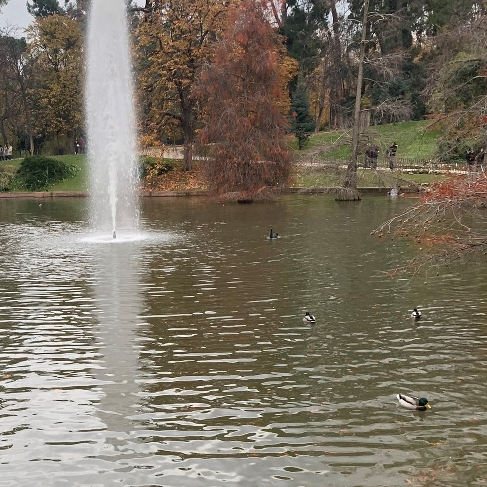

Rodrigo Lozano @rodrilozanillo1132 Carrera del día de hoy, algo intensa devido al tiempo y a la altitud de la ruta de 1.5km pero todo bien. Seguimos mejorando Ver Más
Alberto Escalona @1978escalonalberto Carrera de hoy hecha✔✔. Un dia un poco malillo para salis a correr, pero aun así se ha podido superar en las calles de Toledo 7,1Km. A POR MÁSSSSS Ver Más
Alberto Contador @contadoralberto1965 Hoy tenemos un recorrido más tranquilo por la localidad de Los Yébenes, pasando por parques que nos dejan las siguientes fotos:  Ver Más
Rodrigo Lozano @rodrilozanillo1132 Carrera del día de hoy, algo intensa devido al tiempo y a la altitud de la ruta de 1.5km pero todo bien. Seguimos mejorando Ver Más